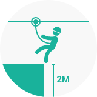
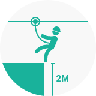
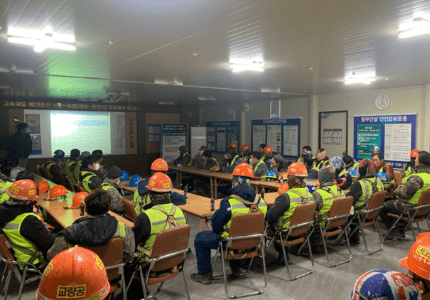
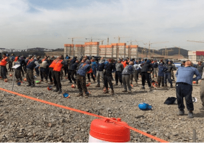
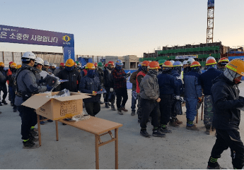

안전보건경영
- 안전보건 경영방침
-
동부건설은 기업을 경영하는데 있어 고객과 종사자의 안전과 생명을 최우선 가치로 삼고
실질적으로 지배·운영·관리하는 사업 또는 사업장에 안전 및 보건 확보의무를 충실히 이행하여
인적재해와 물적재해가 없는 지속가능한 기업으로 성장하고자 아래사항을 반드시 실천한다.- 안전보건 법적 요구사항 준수
- 안전보건경영시스템 지속적 개선
- 유해·위험요인 제거 및 리스크 감소
- 안전하고 쾌적한 작업환경 조성
- 종사자의 참여 및 협의 보장
- 안전보건 경영목표
-
- 중대산업재해 ZERO
- 건설장비사고 ZERO
- 산업재해예방활동 점수 95점
2022.01.01
동부건설 대표이사
안전보건 중점 추진방향
- 중대산업재해 Zero
- 건설장비사고 Zero
- 산업재해예방활동 점수 95점
동부 안전문화 확산 및 정착
선제적인 산업재해예방 조치, 능동적인 안전보건활동 참여, 실질적인 안전보건업무 수행
- 01
- 안전보건 High Risk 관리 강화
- 동부 S&H Golden Rules7 수립
- 위험성평가 업무절차 개선 이행
- 건설장비 사전/정기점검 의무화
- 현장 안전보건 수준별 차등 관리
- 02
- 안전보건 역량 제고 및 Infra 구축
- 조직 구성원별 맞춤형 교육 실시
- 협력업체 안전보건 지원 강화
- 안전/보건관리자 의사소통 강화
- 안전보건 종합 플랫폼 개발
- 03
- 중대재해처벌법 Compliance 준수
- 안전보건 관계 법령 점검/보고 강화
- 안전보건 예산 투자 및 적정 집행
- 종사자 의견청취 절차 개선 이행
- 제 3자 (도급, 용역, 위탁) 안전보건 확보
- 근로자 작업중지권 전면 보장
안전보건경영시스템 운영체계
안전보건경영시스템 인증현황
Occupational Safety and Health Management System
KOSHA-MS, ISO 45001
- KOSHA-MS, ISO 45001 인증
-
사업장의 자율적인 안전보건경영체제의 구축과 실현여부를
제3자가 객관적으로 평가하여 기업의 안전보건경영시스템의
적합성을 인정해주는 인증서
- 취득 연혁
-
- 2012. 08. 07. KOSHA 18001 인증 취득
- 2021. 50. 18. ISO 45001 인증 취득
- 2021. 07. 20. KOSHA-MS 인증 전환
안전보건경영시스템 발전단계
- 안전문화운동
-
동부건설은 중대산업재해를 예방하고 안전한 건설현장 조성을 위해 당사 30년 중대재해 발생원인을 분석하고, 최고경영자의 안전보건 강조사항을 반영하여 동부건설의 안전문화로 정착할 수 있는 동부건설 '7대 안전보건 골든룰(S&H Golden Rules 7)'을 수립 및 운영하고 있습니다.
7대 안전보건 골든룰 (S&H Golden Rules 7) 22년 중대산업재해 "ZERO" 달성 안전캠페인안전 골든룰 5
-

2M 이상 고소작업시
안전대 착용 및
안전고리 체결하기 -
 추락 위험구간 안전시설
추락 위험구간 안전시설
임의 해체하지 않기 -
 충분한 강도의 개구부 덮개
충분한 강도의 개구부 덮개
설치 및 고정하기 -
 장비/인양작업시
장비/인양작업시
신호수 배치 및
접근 통제하기 -
 화기 사용시 불꽃방지막
화기 사용시 불꽃방지막
사용하기
-
 근로자 편의시설
근로자 편의시설
(화장실, 샤워실, 휴게실)
깨끗하게 유지하기 -
 밀폐공간 무단
밀폐공간 무단
출입하지 않기
안전 골든룰 5가지 관리요소-
 고소작업자 관리
고소작업자 관리
- 안전시설물 관리
-
 개구부 관리
개구부 관리
-
 신호수 배치 관리
신호수 배치 관리
- 화기작업 관리
-
 근로자 편의시설 관리
근로자 편의시설 관리
-
 밀폐공간 출입 관리
밀폐공간 출입 관리
-

2M 이상 고소작업시
- 안전보건행사
-
동부건설은 근로자의 안전의식 고취를 위해 아래와 같이 안전보건행사를 실시하고 있습니다.
- 안전점검의 날 행사
- 안전기원제
- 안전캠페인
- 안전점검의 날 행사
-
 안전기원제
안전기원제
- 안전점검의 날 행사
- 안전캠페인
- 안전보건점검
-
동부건설은 중대산업재해를 예방하기 위하여 아래와 같이 안전보건점검을 실시하고 있습니다.
- 합동 안전보건점검(최고경영자 참석)
- 지원점검
- 평가점검
- 불시점검
- 특별점검
- 장비점검(고위험장비*반입 전 사전점검) *고위험장비 : 타워크레인, 향타 및 향발기, 건설용 리프트, 이동식크레인(200ton 이상)
- 합동 안전보건점검
- 장비점검
-
 합동 안전보건점검
합동 안전보건점검
-
 장비점검
장비점검
- 안전보건교육
-
동부건설은 전 임직원 및 협력업체의 안전보건 역량(안전보건경영시스템, 기술안전 등)을 확보하고, 안전보건 의식을 제고하기 위해 아래와 같이 안전보건교육을 실시하고 있습니다.
- 현장소장 교육
- 관리감독자 교육
- 안전/보건관리자 교육
- 협력업체 현장 방문교육
- 협력업체 임직원 안전교육
- 안전보건경영시스템 전문교육
- 안전보건경영시스템 기본교육
-
 현장소장 및 관리감독자 교육
현장소장 및 관리감독자 교육
- 안전/보건관리자 교육
- 안전보건경영시스템 교육
-  협력업체 교육
- 근로자 건강관리
-
동부건설은 근로자의 건강증진 및 질병예방을 위해 근로자 휴게소 운영, 건강관리 프로그램 운영(외부 강사 초청), 건강검진 실시 등의 활용을 통하여 근로자의 건강 확보를 위해 노력하고 있습니다.
- 근로자휴게실
-
 여성근로자쉼터
여성근로자쉼터
- 건강관리 프로그램(외부 강사 초청)
-
 근로자휴게실
근로자휴게실
-
 건강검진
건강검진
-  건강관리 프로그램(외부 강사 초청)
- 감성안전활동
-
동부건설은 근로자 모두가 안전보건활동에 자발적으로 참여할 수 있도록 분위기를 조성하기 위해 근로자에게 감동을 주는 안전보건활동을 실천하고 있습니다.
-
 하절기 커피차 운영
하절기 커피차 운영
- 하절기 아이스크림 지급
-  동절기 방한용품 지급
- 하절기 수박 지급
- 하절기 아이스크림 지급
- 동절기 따뜻한 음료 지급
-
- 근로자 작업중지권 보장
-
동부건설은 산업재해가 발생할 수 있는 급박한 위험이 있는 경우 근로자에게 작업중지권을 부여, 위험으로부터 근로자를 보호하고 유해·위험요인 및 위험성 보고 시 부당한 조치로부터 근로자가 보호됨을 인식토록 하기 위해 현장 안전신고센터를 운영하고 있습니다.
-
 근로자 작업중지권 보장안내
근로자 작업중지권 보장안내
- 근로자 작업중지권 보장 선포식
-
- 안전보건점검 실적
-
2021년
대상현장 점검주관 점검구분 점검횟수(회) 비고 전 현장 본사 합동 안전보건점검(안전점검의 날) 158 월1회 점검 안전보건검검 196 수시점검 컨설팅업체 안전보건검검 343 수시점검